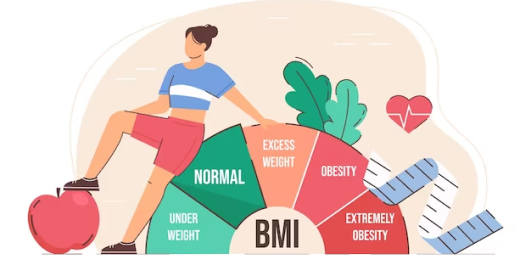

Diet Tinggi Protein
Diet yang menekankan konsumsi protein tinggi dengan membatasi konsumsi karbohidrat dan lemak. Tujuannya adalah untuk mempercepat penurunan berat badan dan membentuk otot.
D’care adalah website untuk membantu kamu menjaga kesehatan mu! D’care hadir dengan fitur kalkulator BMI dan BMR yang dapat membantu kamu dalam menghitung berat ideal dan juga jumlah asupan kalori yang ideal sesuai tubuh mu!*
*Untuk kebutuh gizi yang sesuai silahkan berkonsultasi bersama ahli gizi.
Silahkan masuk ke akun untuk memanfaatkan fitur yang kami berikan
MasukHitung berat ideal mu menggunakan kalkulator BMI (Body Mass Index)
Tentukan kategori tubuhmu berdasarkan tinggi dan berat badan.
Untuk informasi lebih lanjut tentang diet, Anda dapat membaca artikel di bawah ini